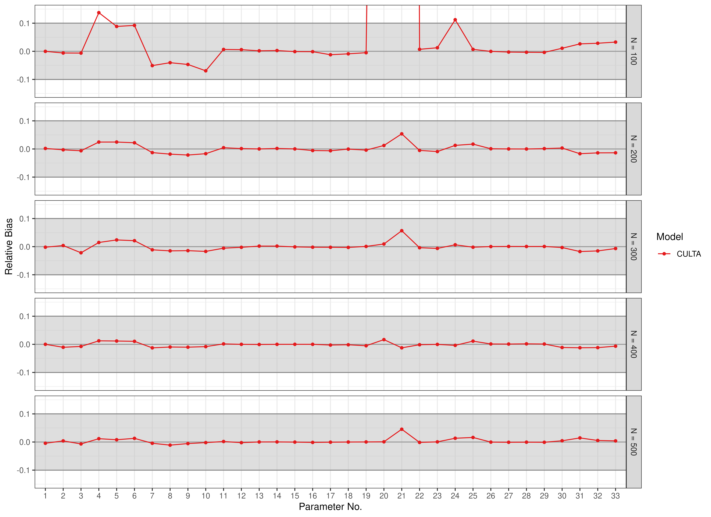

Scatter Plots - CULTA Estimates
Ivan Jacob Agaloos Pesigan
Source:vignettes/fig-culta.Rmd
fig-culta.RmdBias
data(results_culta_est, package = "manCULTA")
FigBiasCULTAEst(results_culta_est = results_culta_est)
RMSE
data(results_culta_est, package = "manCULTA")
FigRMSECULTAEst(results_culta_est = results_culta_est)
Coverage
data(results_culta_est, package = "manCULTA")
FigCoverageCULTAEst(results_culta_est = results_culta_est)Power
data(results_culta_est, package = "manCULTA")
FigPowerCULTAEst(results_culta_est = results_culta_est)